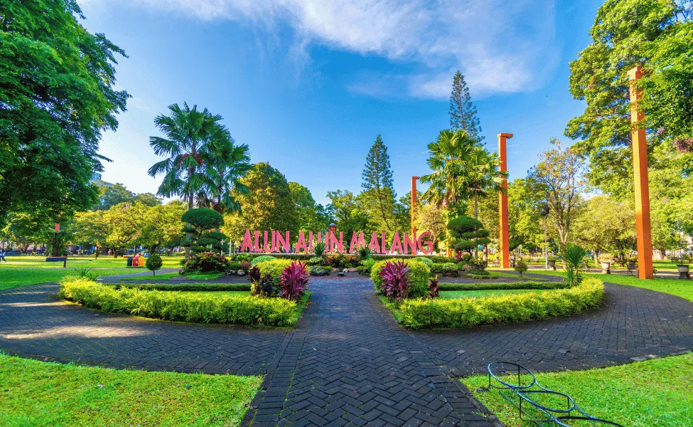
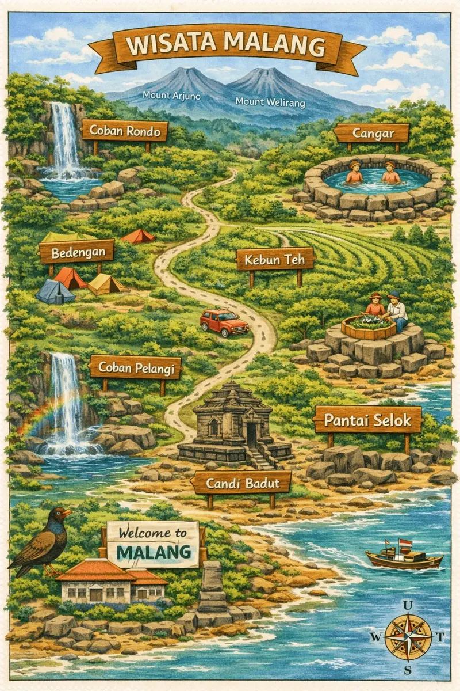

Explore Nature, Understand Life

STEM Insight: Utilizing Geographic Information Systems (GIS) to visualize biodiversity hotspots and ecological zones across Malang Raya.
Memuat destinasi wisata...
Kawasan Malang Raya memiliki lebih dari 2.500 spesies flora pegunungan yang berperan penting sebagai catchment area (area resapan air), menjaga keseimbangan siklus hidrologi untuk jutaan penduduk di Jawa Timur.